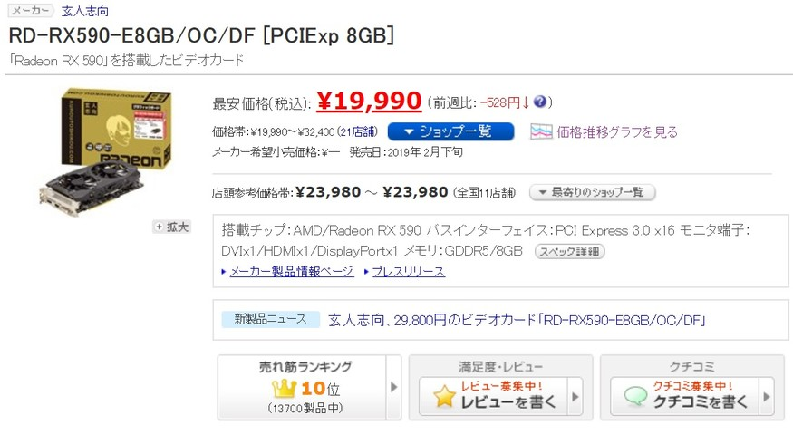
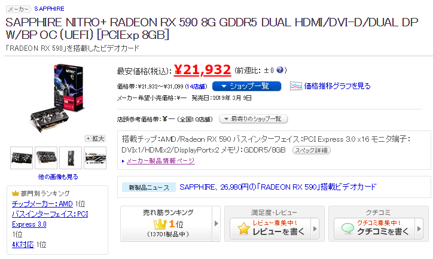

Radeon RX590を買った。
というのも先日公開されたファイナルファンタジー14 漆黒のヴィランズベンチマークで私のメインマシンは結構辛い判定になってしまったから。(1080p / 最高品質 / 6678点)
1080p / ノート高画質設定でなんとか60fpsを保っているが、今後発売されるサイバーパンク2077などのでかいタイトルにはGTX1050ではなかなか耐えられそうにない…
で、なんとなーくGTX1660とかが暴落しないかなーって見てたりしてたんですけど、Twitterを見ているとどうやらRX590が安くなっているとのことで。
 一時期のマイニングブームから一転、大量の在庫をさばくためかRX570等が値下がってるのは見ていたけど、ここまで下がるとは…
というわけで買いました。SAPPHIRE NITRO+ RADEON RX590 8G。
My New Gear… pic.twitter.com/IKcq85CVKb
— するすす (@su_rususu) 2019年6月14日
これでメインマシンはフルAMD仕様に。早速ベンチを回してみる。
— するすす (@su_rususu) 2019年6月14日
ギリギリの10000スコアを突破。FF14, 15ベンチは謎の半導体メーカー技術多めなのでGTXシリーズに比べると結構辛いですが、FHDでの60fps動作は楽勝な結果に。
ForzaHorizon 4やPUBG等も動かしてみましたがどれも余裕な感じ。
欠点はやはり熱、消費電力ですが600W電源で動くしそこまで気にするほどではないのかも？PCは離して置けばいいしね。
これであと3年は戦っていくぞ～